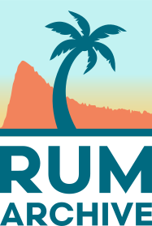

RUM Archive (beta!)
The RUM Archive is a publicly available and queryable dataset of anonymized Real User Monitoring (RUM) page loads and resource fetches.
Taking inspiration from projects like the Wayback Machine and the HTTP Archive, we aim to make RUM data available for researchers to analyze trends in market share and performance analytics.
Want to query this data? Check out the documentation for details on how to access it.
Interested in contributing your own RUM data to the public dataset? Read the contributing guide for more details.